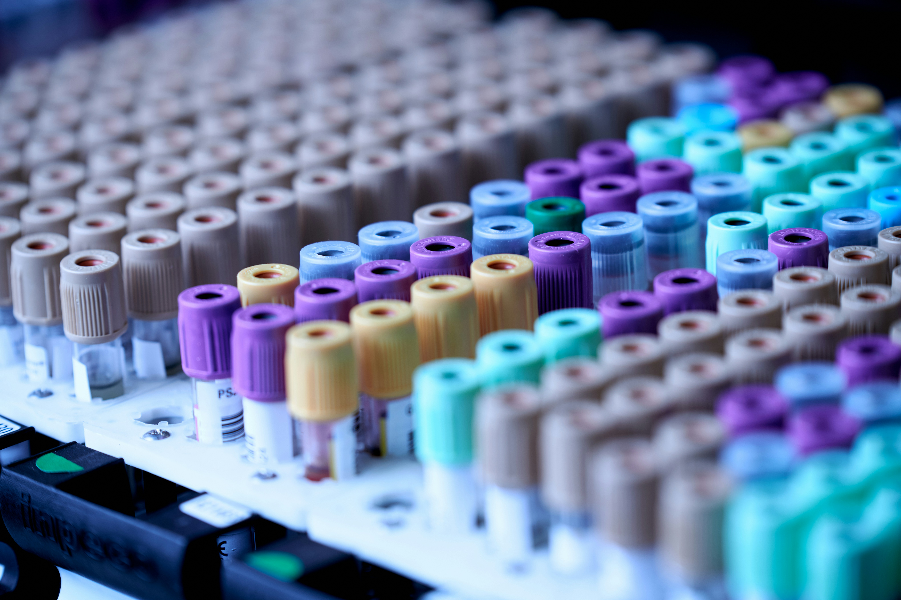

Paramedical Program Directory
Select your field of interest and review specialized prerequisites and seat metrics.

DiplomaDMLT (Diploma in Medical Laboratory Technology)
Specialized training focused on clinical laboratory investigations such as Blood analysis, Hematology, Biochemical parameters, and Urine testing processes.
 PG Diploma
PG Diploma
ADMLT / PGDMLT (Advanced/Post Graduate Diploma)
An advanced progression paradigm dealing with complex microbiology protocols, histopathology, molecular diagnostics, and automated lab management systems.
Radiology Technician
Hands-on skill acquisition dealing with diagnostic medical machinery, including operating X-Ray devices, structural imaging alignment, and essential radiation protective safety mechanisms.
 Certificate Course
Certificate Course
CC in Health Sanitary Inspector
Focuses heavily on structural civic sanitation management, basic public epidemiological defense patterns, health system data auditing, and municipal safety inspections.
 Diploma Program
Diploma Program
DNYS (Diploma in Naturopathy & Yoga Sciences)
Blending traditional holistic methodologies with clinical parameters, covering physiological healing mechanisms, dietary nutrition regimes, and therapeutic yogic structures.